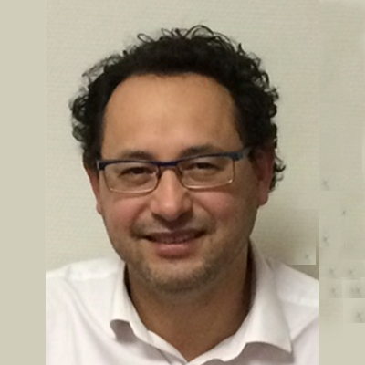

Academical Staff

Mauricio Camargo
Directeur de l’ERPI et professeur
Mauricio Camargo est professeur en Management de la Technologie et de l’Innovation à l’Ecole Nationale en Génie des Systèmes Industriels de Nancy (Ecole d’Ingénieurs Industriels de l’Université de Lorraine -France), et chercheur au Laboratoire ERPI (Equipe de Recherche sur les Procédés Innovants) dont il est également le Directeur.
Docteur en Automatique des Systèmes Industriels et Humains de l’Université de Valenciennes et de Hainaut Cambresis en France. Ses principaux intérêts de recherche sont :
Le développement de nouveaux produits La prise de décision dans les processus d’innovation et stratégie technologique. Son projet le plus récent concerne les approches multidimensionnelles des applications de l’hydrogène comme vecteur énergétique sur les écoquartiers.
Brunelle Marche
Brunelle est MdC et docteure en Génie Industriel. Ses recherches portent sur la conception de filière et notamment sur l’importance d’une approche combinée prospective et optimisation multi-échelle dans la conception d’une filière pour répondre aux exigences de plus en plus complexe d’un nouveau produit. Son travail combine ingénierie de l’innovation et ingénierie système afin de proposer des outils facilitant la conception et la mise en oeuvre de filière. Dans le cadre de sa recherche, elle a collaboré avec l’Université de Delft. Brunelle est membre du réseau européen NiTiM de chercheurs en innovation et gestion de la technologie
Mots-clés : Génie Industriel, Innovation, Conception de filière, Modélisation, Systémique.
Brice
Il travaille …
Les autres..
Il travaille …